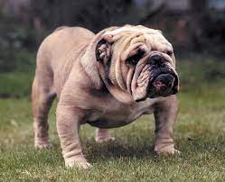

The Bulldog,[4] also known as the English Bulldog or British Bulldog, is a medium-sized dog breed. It is a muscular, hefty dog with a wrinkled face and a distinctive pushed-in nose.[5] The Kennel Club (UK), the American Kennel Club (US), and the United Kennel Club (US) oversee breeding records. Bulldogs are popular pets; they were the fifth most popular purebreed in the US in 2017 according to the American Kennel Club.[6] Bulldogs have a longstanding association with British culture, as the BBC wrote: "to many the Bulldog is a national icon, symbolising pluck and determination."[7] During World War II, Bulldogs were often likened to Prime Minister Winston Churchill and his defiance of Nazi Germany.[8] The Bulldog Club (England) was formed in 1878, and the Bulldog Club of America was formed in 1890
